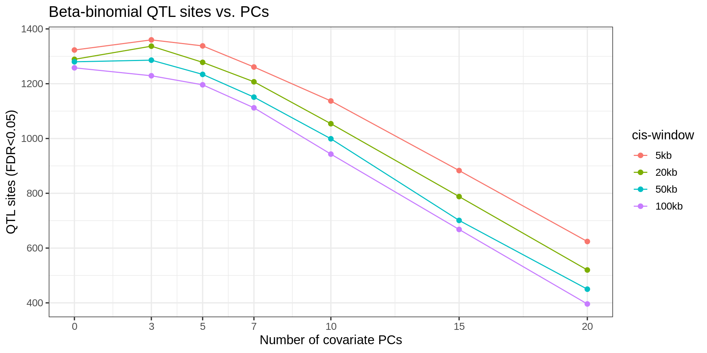
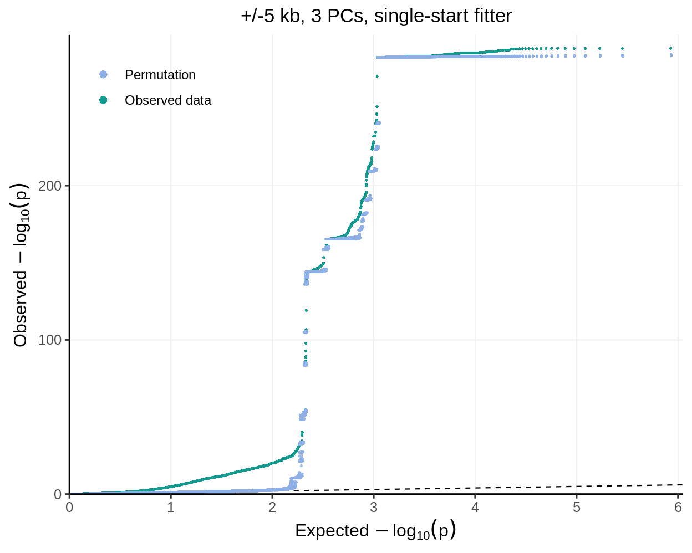

Last updated: 2026-10-12
Checks: 6 1
Knit directory: pumseq/
This reproducible R Markdown analysis was created with workflowr (version 1.7.0). The Checks tab describes the reproducibility checks that were applied when the results were created. The Past versions tab lists the development history.
The R Markdown file has unstaged changes. To know which version of
the R Markdown file created these results, you’ll want to first commit
it to the Git repo. If you’re still working on the analysis, you can
ignore this warning. When you’re finished, you can run
wflow_publish to commit the R Markdown file and build the
HTML.
Great job! The global environment was empty. Objects defined in the global environment can affect the analysis in your R Markdown file in unknown ways. For reproduciblity it’s best to always run the code in an empty environment.
The command set.seed(20260202) was run prior to running
the code in the R Markdown file. Setting a seed ensures that any results
that rely on randomness, e.g. subsampling or permutations, are
reproducible.
Great job! Recording the operating system, R version, and package versions is critical for reproducibility.
Nice! There were no cached chunks for this analysis, so you can be confident that you successfully produced the results during this run.
Great job! Using relative paths to the files within your workflowr project makes it easier to run your code on other machines.
Great! You are using Git for version control. Tracking code development and connecting the code version to the results is critical for reproducibility.
The results in this page were generated with repository version 7416f4c. See the Past versions tab to see a history of the changes made to the R Markdown and HTML files.
Note that you need to be careful to ensure that all relevant files for
the analysis have been committed to Git prior to generating the results
(you can use wflow_publish or
wflow_git_commit). workflowr only checks the R Markdown
file, but you know if there are other scripts or data files that it
depends on. Below is the status of the Git repository when the results
were generated:
Ignored files:
Ignored: analysis/qtl_mapping_summary_cache/
Untracked files:
Untracked: analysis/qtl_mapping_betabinomial_pc_window_permutation.Rmd
Untracked: code/qq_full_style.R
Unstaged changes:
Modified: analysis/index.Rmd
Modified: analysis/qtl_mapping_betabinomial_calibration_noUC.Rmd
Modified: analysis/qtl_mapping_betabinomial_calibration_noUCcalled.Rmd
Modified: analysis/qtl_mapping_betabinomial_grid.Rmd
Modified: analysis/qtl_mapping_betabinomial_npcs_tradeoff.Rmd
Modified: analysis/qtl_mapping_betabinomial_null_simulation.Rmd
Modified: analysis/qtl_mapping_betabinomial_optimiser.Rmd
Modified: analysis/qtl_mapping_betabinomial_pathology_summary.Rmd
Modified: analysis/qtl_mapping_betabinomial_site26.Rmd
Modified: analysis/qtl_mapping_betabinomial_strategy.Rmd
Modified: analysis/qtl_mapping_summary_betabinomial.Rmd
Note that any generated files, e.g. HTML, png, CSS, etc., are not included in this status report because it is ok for generated content to have uncommitted changes.
These are the previous versions of the repository in which changes were
made to the R Markdown
(analysis/qtl_mapping_summary_betabinomial.Rmd) and HTML
(docs/qtl_mapping_summary_betabinomial.html) files. If
you’ve configured a remote Git repository (see
?wflow_git_remote), click on the hyperlinks in the table
below to view the files as they were in that past version.
| File | Version | Author | Date | Message |
|---|---|---|---|---|
| Rmd | 64fcefa | XSun | 2026-07-31 | update |
| html | 64fcefa | XSun | 2026-07-31 | update |
| Rmd | 08ba4ea | XSun | 2026-07-29 | update |
| html | 08ba4ea | XSun | 2026-07-29 | update |
| Rmd | 286e600 | XSun | 2026-07-29 | update |
| html | 286e600 | XSun | 2026-07-29 | update |
| html | 2d7d55b | XSun | 2026-07-24 | update |
| Rmd | 6e21490 | XSun | 2026-07-24 | update |
| html | 6e21490 | XSun | 2026-07-24 | update |
| Rmd | a41e4e3 | XSun | 2026-07-23 | update |
| html | a41e4e3 | XSun | 2026-07-23 | update |
library(data.table)
library(ggplot2)
knitr::opts_chunk$set(
echo = TRUE, warning = FALSE, message = FALSE,
fig.align = "center", fig.width = 10, fig.height = 6
)
PROJECT_DIR <- "/project/xinhe/xsun/pumseq"
BB <- file.path(PROJECT_DIR, "pumseq_processed/psi_qtl/qtl_betabinomial")
BBR <- file.path(BB, "lrt_results_merged")
BIN <- file.path(PROJECT_DIR, "pumseq_processed/psi_qtl/qtl_binomial/lrt_results_merged")
WINDOWS_KB <- c(5, 20, 50, 100)
PC_COUNTS <- c(0, 3, 5, 7, 10, 15, 20)This page tests the beta-binomial, which models that overdispersion directly:
\[ y_i \sim \text{BetaBinomial}(n_i, \mu_i, \phi), \qquad \text{Var}(y_i) = n_i \mu_i (1-\mu_i)\,[\,1 + (n_i - 1)\phi\,], \]
with the same mean model
logit(mu_i) = beta_0 + beta_g G_i + z_i'gamma, the same
5-fold union sites (12,416), the same 50 cell lines, and the same
M-value PC covariates. phi is the intra-class-correlation
dispersion (phi = 0 recovers the binomial).
The genotype effect beta_g is tested with a
likelihood-ratio test (LRT), matching the binomial model’s
approach — see the model
page. The results below use NPERM=100
(not the full 1000) — a preliminary pass, made affordable by two
optimizations to the beta-binomial fitter (dropping a constant term from
the optimizer’s objective + supplying an analytic gradient, ~2.5-2.9x
speedup) plus running fewer permutations to first rank PC/window configs
and check calibration
Permutations will be increased
once a final config is chosen.
read_bb <- function(w, k) {
f <- file.path(BBR, sprintf("scan_lrt_w%dkb_pc%d.txt.gz", w, k))
if (!file.exists(f)) return(NULL)
d <- fread(f); d[, `:=`(window_kb = w, n_pcs = k)]; d
}
grid <- CJ(w = WINDOWS_KB, k = PC_COUNTS)
bb <- rbindlist(mapply(read_bb, grid$w, grid$k, SIMPLIFY = FALSE), use.names = TRUE, fill = TRUE)
bb_sum <- bb[, .(n_tested = .N, qtl_FDR05 = sum(fdr < 0.05, na.rm = TRUE)),
by = .(window_kb, n_pcs)][order(window_kb, n_pcs)]
bb_sum[, window_lab := factor(paste0(window_kb, "kb"), levels = paste0(WINDOWS_KB, "kb"))]
knitr::kable(dcast(bb_sum, window_kb ~ n_pcs, value.var = "n_tested"),
caption = "Sites the beta-binomial could fit (rows=window kb, cols=PCs)")| window_kb | 0 | 3 | 5 | 7 | 10 | 15 | 20 |
|---|---|---|---|---|---|---|---|
| 5 | 9885 | 11112 | 10672 | 10225 | 9496 | 8319 | 6989 |
| 20 | 10024 | 11250 | 10788 | 10319 | 9577 | 8379 | 7039 |
| 50 | 10092 | 11325 | 10850 | 10372 | 9627 | 8413 | 7056 |
| 100 | 10103 | 11336 | 10858 | 10380 | 9634 | 8418 | 7060 |
knitr::kable(dcast(bb_sum, window_kb ~ n_pcs, value.var = "qtl_FDR05"),
caption = "Beta-binomial QTL sites (FDR<0.05)")| window_kb | 0 | 3 | 5 | 7 | 10 | 15 | 20 |
|---|---|---|---|---|---|---|---|
| 5 | 1323 | 1360 | 1338 | 1261 | 1137 | 883 | 624 |
| 20 | 1289 | 1337 | 1278 | 1207 | 1054 | 788 | 520 |
| 50 | 1280 | 1286 | 1234 | 1151 | 999 | 701 | 450 |
| 100 | 1258 | 1229 | 1196 | 1112 | 943 | 668 | 396 |
ggplot(bb_sum, aes(x = n_pcs, y = qtl_FDR05, color = window_lab)) +
geom_line() + geom_point(size = 2) +
scale_x_continuous(breaks = PC_COUNTS) +
labs(x = "Number of covariate PCs", y = "QTL sites (FDR<0.05)", color = "cis-window",
title = "Beta-binomial QTL sites vs. PCs") +
theme_bw(base_size = 13)
Unlike the binomial model — where discovery counts rise monotonically as PCs are removed, peaking at k=0 (intercept-only) — the beta-binomial’s counts peak at k=3 (1,360 at 5kb) and k=0 is slightly lower (1,323). k=0 also has noticeably fewer fittable sites (9,885 vs. 11,112 at k=3, 5kb) — some sites’ beta-binomial null fit doesn’t converge without any PC covariates. Both observations point the same way: the beta-binomial’s dispersion term is already absorbing whatever confounding the binomial’s inflation at k=0 was catching, so a few PCs still help here even though they don’t for the binomial. Calibration has only been checked at k=3 (Section 3), not at k=0.
At k = 3, comparing both models’ current LRT results:
read_bin <- function(w, k) {
f <- file.path(BIN, sprintf("scan_lrt_w%dkb_pc%d.txt.gz", w, k))
if (!file.exists(f)) return(NULL)
fread(f)
}
h2h <- rbindlist(lapply(WINDOWS_KB, function(w) {
db <- read_bb(w, 3); dn <- read_bin(w, 3)
data.table(window = paste0(w, "kb"),
binomial = sum(dn$fdr < 0.05, na.rm = TRUE),
betabinom = sum(db$fdr < 0.05, na.rm = TRUE))
}))
h2h[, `fold change` := round(betabinom / binomial, 1)]
knitr::kable(h2h, caption = "QTL sites (FDR<0.05) at k=3: binomial LRT vs. beta-binomial LRT")| window | binomial | betabinom | fold change |
|---|---|---|---|
| 5kb | 383 | 1360 | 3.6 |
| 20kb | 308 | 1337 | 4.3 |
| 50kb | 285 | 1286 | 4.5 |
| 100kb | 263 | 1229 | 4.7 |
We ran the same permutation calibration check used for the binomial (5 seeds, same config: 5kb, 3 PCs), testing the LRT — a full beta-binomial refit per site per permutation
CAL <- file.path(BB, "lrt_calibration")
lam <- fread(file.path(CAL, "calib_lrt_w5kb_pc3_lambda.txt"))
knitr::kable(lam, digits = 2,
caption = "Genomic-inflation lambda (5kb, 3 PCs): real vs. 5 permuted nulls (beta-binomial LRT)")| dataset | lambda |
|---|---|
| real | 2.47 |
| perm1 | 1.19 |
| perm2 | 0.96 |
| perm3 | 1.10 |
| perm4 | 1.09 |
| perm5 | 1.03 |
# every p-value, no thinning (53.qq_full_page_data.R; the same run as the earlier
# calib_lrt_w5kb_pc3_qq.png image, which was drawn from 5,000 thinned points)
source("code/qq_full_style.R")
qq_panel(fread(file.path(CAL, "calib_lrt_w5kb_pc3_qq_allpoints.tsv.gz")), "+/-5 kb, 3 PCs, single-start fitter")
knitr::kable(data.table(
model = c("binomial LRT", "beta-binomial LRT"),
real_lambda = c(5.55, round(lam[dataset == "real"]$lambda, 2)),
permuted_null_lambda_range = c("2.93 - 3.44", sprintf("%.2f - %.2f",
min(lam[dataset != "real"]$lambda),
max(lam[dataset != "real"]$lambda)))
), caption = "Nominal-p calibration: binomial LRT vs. beta-binomial LRT")| model | real_lambda | permuted_null_lambda_range |
|---|---|---|
| binomial LRT | 5.55 | 2.93 - 3.44 |
| beta-binomial LRT | 2.47 | 0.96 - 1.19 |
sessionInfo()R version 4.2.0 (2022-04-22)
Platform: x86_64-pc-linux-gnu (64-bit)
Running under: CentOS Linux 8
Matrix products: default
BLAS/LAPACK: /software/openblas-0.3.13-el8-x86_64/lib/libopenblas_skylakexp-r0.3.13.so
locale:
[1] C
attached base packages:
[1] stats graphics grDevices utils datasets methods base
other attached packages:
[1] ggplot2_3.4.2 data.table_1.14.4 workflowr_1.7.0
loaded via a namespace (and not attached):
[1] tidyselect_1.2.0 xfun_0.38 bslib_0.3.1 colorspace_2.0-3
[5] vctrs_0.6.1 generics_0.1.3 htmltools_0.5.7 yaml_2.3.5
[9] utf8_1.2.2 rlang_1.1.2 R.oo_1.24.0 jquerylib_0.1.4
[13] later_1.3.0 pillar_1.9.0 glue_1.6.2 withr_2.5.0
[17] R.utils_2.11.0 lifecycle_1.0.4 stringr_1.5.0 munsell_0.5.0
[21] gtable_0.3.0 R.methodsS3_1.8.1 evaluate_0.15 labeling_0.4.2
[25] knitr_1.42 callr_3.7.0 fastmap_1.1.0 httpuv_1.6.5
[29] ps_1.7.0 fansi_1.0.3 highr_0.9 Rcpp_1.0.11
[33] promises_1.2.0.1 scales_1.2.0 jsonlite_1.8.7 farver_2.1.0
[37] fs_1.5.2 digest_0.6.29 stringi_1.7.6 processx_3.5.3
[41] dplyr_1.1.2 getPass_0.2-2 rprojroot_2.0.3 grid_4.2.0
[45] cli_3.6.2 tools_4.2.0 magrittr_2.0.3 sass_0.4.1
[49] tibble_3.2.1 whisker_0.4 pkgconfig_2.0.3 rmarkdown_2.21
[53] httr_1.4.5 rstudioapi_0.14 R6_2.5.1 git2r_0.30.1
[57] compiler_4.2.0